- Last time, we looked at associations with two continuous variables
- This time, we will extend regression framework to incorporate continuos predictors.
\[ Y = b_{0} + b_{1}X +e \] \[ \hat{Y} = b_{0} + b_{1}X \]
\[ min\sum(Y_{i}-\hat{Y})^{2} \]
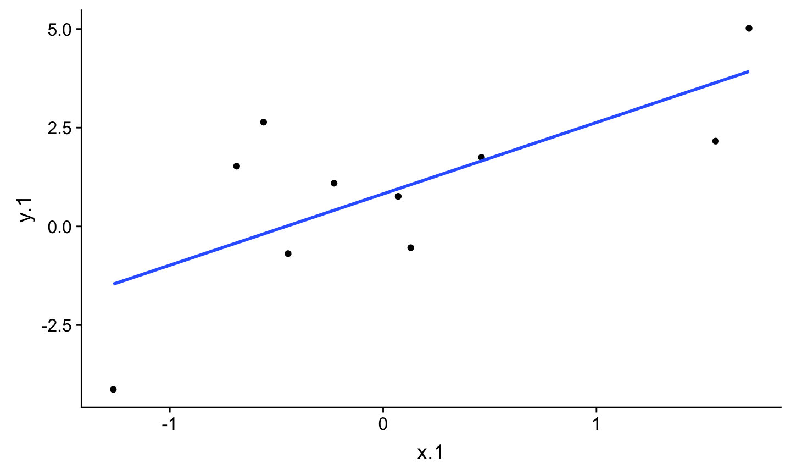
ggplot(d1.f , aes(x=x.1, y=y.1)) +
geom_point() +
geom_point(aes(y = .fitted), shape = 1)
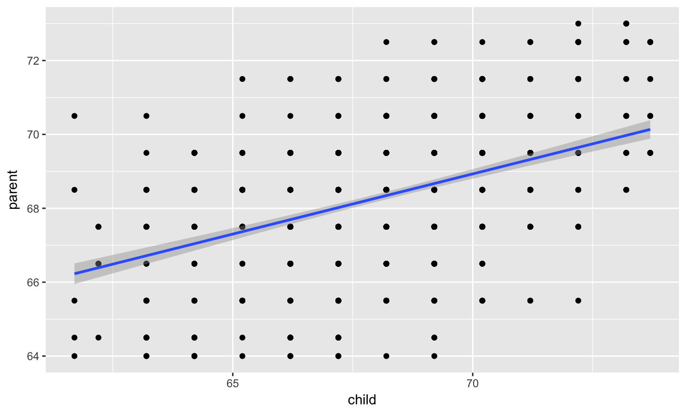
ggplot(d1.f , aes(x=x.1, y=y.1)) +
geom_point() +
geom_point(aes(y = .fitted), shape = 1) +
geom_segment(aes( xend = x.1, yend = .fitted))
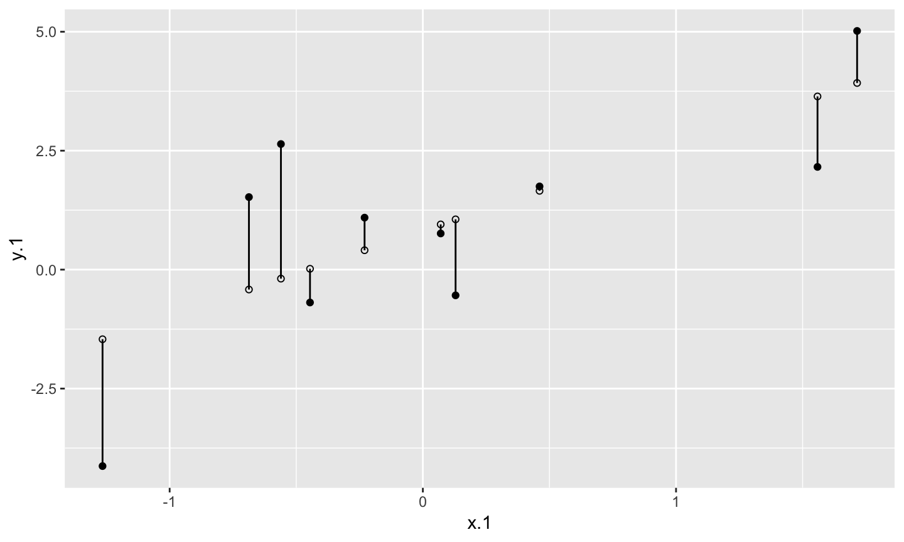
ggplot(d1.f , aes(x=x.1, y=y.1)) +
geom_point() +
geom_smooth(method = lm, se = FALSE) +
geom_point(aes(y = .fitted), shape = 1) +
geom_segment(aes( xend = x.1, yend = .fitted))
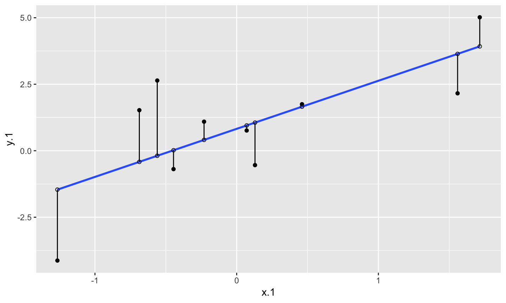
\[ b_{1} = \frac{cov_{XY}}{s_{x}^{2}} = r_{xy} \frac{s_{y}}{s_{x}} \]
\[ Y = b_{1}^{*}X + e \] - Interpretation?
\[ \hat{Y} = \bar{Y} + r_{xy} \frac{s_{y}}{s_{x}}(X-\bar{X}) \] - if standardized, intercept drops out
- otherwise, intercept is where regression line crosses the y-axis at X = 0
- Also, notice that when X = \(\bar{X}\) the regression line goes through \(\bar{Y}\)
library(psych) galton.data <- galton fit.1 <- lm(parent ~ child, data = galton.data) summary(fit.1)
## ## Call: ## lm(formula = parent ~ child, data = galton.data) ## ## Residuals: ## Min 1Q Median 3Q Max ## -4.6702 -1.1702 -0.1471 1.1324 4.2722 ## ## Coefficients: ## Estimate Std. Error t value Pr(>|t|) ## (Intercept) 46.13535 1.41225 32.67 <2e-16 *** ## child 0.32565 0.02073 15.71 <2e-16 *** ## --- ## Signif. codes: 0 '***' 0.001 '**' 0.01 '*' 0.05 '.' 0.1 ' ' 1 ## ## Residual standard error: 1.589 on 926 degrees of freedom ## Multiple R-squared: 0.2105, Adjusted R-squared: 0.2096 ## F-statistic: 246.8 on 1 and 926 DF, p-value: < 2.2e-16
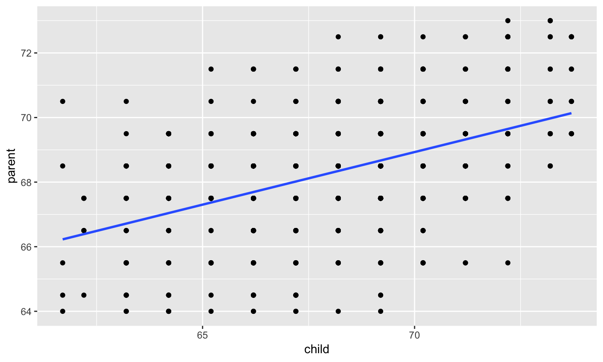
anova(fit.1)
## Analysis of Variance Table ## ## Response: parent ## Df Sum Sq Mean Sq F value Pr(>F) ## child 1 623.26 623.26 246.84 < 2.2e-16 *** ## Residuals 926 2338.10 2.52 ## --- ## Signif. codes: 0 '***' 0.001 '**' 0.01 '*' 0.05 '.' 0.1 ' ' 1
library(broom) galton.data.1 <- augment(fit.1, galton.data) head(galton.data.1)
## # A tibble: 6 x 9 ## parent child .fitted .se.fit .resid .hat .sigma .cooksd .std.resid ## <dbl> <dbl> <dbl> <dbl> <dbl> <dbl> <dbl> <dbl> <dbl> ## 1 70.5 61.7 66.2 0.142 4.27 0.00802 1.58 0.0295 2.70 ## 2 68.5 61.7 66.2 0.142 2.27 0.00802 1.59 0.00833 1.44 ## 3 65.5 61.7 66.2 0.142 -0.728 0.00802 1.59 0.000855 -0.460 ## 4 64.5 61.7 66.2 0.142 -1.73 0.00802 1.59 0.00482 -1.09 ## 5 64 61.7 66.2 0.142 -2.23 0.00802 1.59 0.00801 -1.41 ## 6 67.5 62.2 66.4 0.133 1.11 0.00698 1.59 0.00172 0.701
psych::describe(galton.data.1$.fitted)
## vars n mean sd median trimmed mad min max range skew ## X1 1 928 68.31 0.82 68.34 68.32 0.97 66.23 70.14 3.91 -0.09 ## kurtosis se ## X1 -0.35 0.03
psych::describe(galton.data.1$parent)
## vars n mean sd median trimmed mad min max range skew kurtosis ## X1 1 928 68.31 1.79 68.5 68.32 1.48 64 73 9 -0.04 0.05 ## se ## X1 0.06
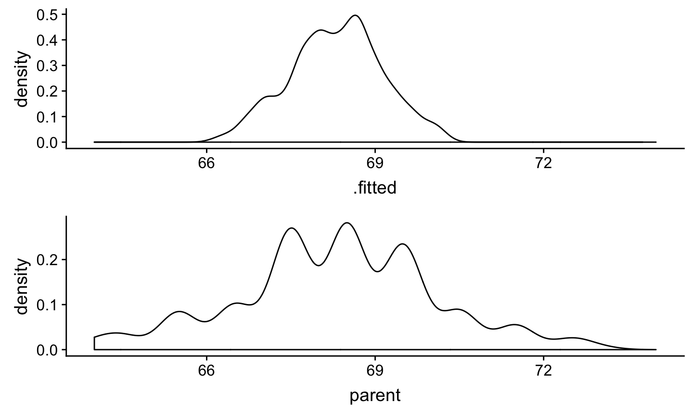
\[ \epsilon \sim N(0,\sigma) \]
psych::describe(galton.data.1$.resid)
## vars n mean sd median trimmed mad min max range skew kurtosis ## X1 1 928 0 1.59 -0.15 0.02 1.52 -4.67 4.27 8.94 -0.1 -0.17 ## se ## X1 0.05
psych::describe(galton.data.1$parent)
## vars n mean sd median trimmed mad min max range skew kurtosis ## X1 1 928 68.31 1.79 68.5 68.32 1.48 64 73 9 -0.04 0.05 ## se ## X1 0.06
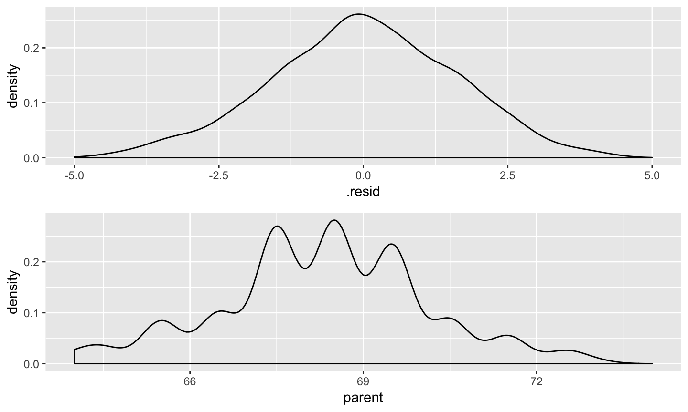
ggplot(galton.data.1, aes(x=.resid, y=child)) +
geom_point() +
geom_smooth(method=lm)
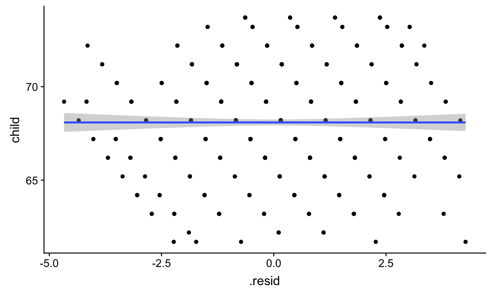
ggplot(galton.data.1, aes(x=.resid, y=.fitted)) +
geom_point() +
geom_smooth(method=lm)
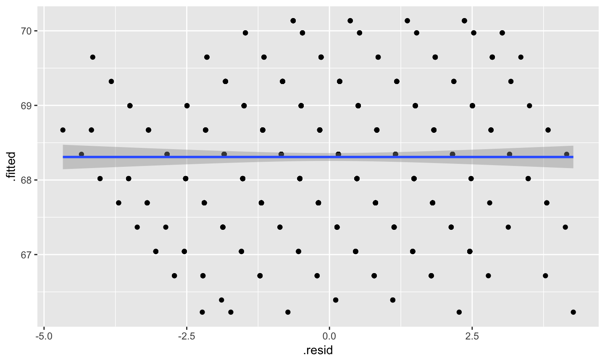
ggplot(galton.data.1, aes(x=.fitted, y=child)) +
geom_point() +
geom_smooth(method=lm)
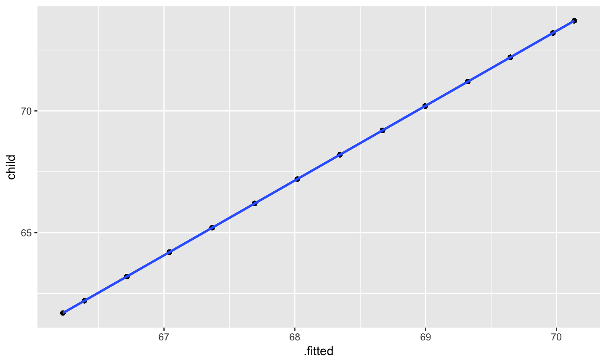
\[ \sum (Y - \bar{Y})^2 = \sum (\hat{Y} -\bar{Y})^2 + \sum(Y - \hat{Y})^2 \]
\[ \frac{s_{regression}^2}{s_{y}^2} = \frac{SS_{regression}}{SS_{Y}} = R^2 \]
summary(fit.1)$r.squared
## [1] 0.2104629
cor.test(galton.data$parent, galton.data$child)
## ## Pearson's product-moment correlation ## ## data: galton.data$parent and galton.data$child ## t = 15.711, df = 926, p-value < 2.2e-16 ## alternative hypothesis: true correlation is not equal to 0 ## 95 percent confidence interval: ## 0.4064067 0.5081153 ## sample estimates: ## cor ## 0.4587624
## Analysis of Variance Table ## ## Response: parent ## Df Sum Sq Mean Sq F value Pr(>F) ## child 1 623.26 623.26 246.84 < 2.2e-16 *** ## Residuals 926 2338.10 2.52 ## --- ## Signif. codes: 0 '***' 0.001 '**' 0.01 '*' 0.05 '.' 0.1 ' ' 1
\[ \frac{SS_{regression}}{SS_{Y}} = R^2 \] \[ {SS_{regression}} = R^2({SS_{Y})} \] \[ {SS_{residual}} = SS_{Y} - R^2({SS_{Y})} \]
\[ {SS_{residual}} = (1- R^2){SS_{Y}} \]
MSE = 2.52
## ## Call: ## lm(formula = parent ~ child, data = galton.data) ## ## Residuals: ## Min 1Q Median 3Q Max ## -4.6702 -1.1702 -0.1471 1.1324 4.2722 ## ## Coefficients: ## Estimate Std. Error t value Pr(>|t|) ## (Intercept) 46.13535 1.41225 32.67 <2e-16 *** ## child 0.32565 0.02073 15.71 <2e-16 *** ## --- ## Signif. codes: 0 '***' 0.001 '**' 0.01 '*' 0.05 '.' 0.1 ' ' 1 ## ## Residual standard error: 1.589 on 926 degrees of freedom ## Multiple R-squared: 0.2105, Adjusted R-squared: 0.2096 ## F-statistic: 246.8 on 1 and 926 DF, p-value: < 2.2e-16
\[ \hat{\sigma} \]
summary(fit.1)$sigma
## [1] 1.589008
psych::describe(galton.data.1$.resid)
## vars n mean sd median trimmed mad min max range skew kurtosis ## X1 1 928 0 1.59 -0.15 0.02 1.52 -4.67 4.27 8.94 -0.1 -0.17 ## se ## X1 0.05
summary(fit.1)$sigma
## [1] 1.589008
psych::describe(galton.data$parent)
## vars n mean sd median trimmed mad min max range skew kurtosis ## X1 1 928 68.31 1.79 68.5 68.32 1.48 64 73 9 -0.04 0.05 ## se ## X1 0.06
x.1 <- rnorm(1000, 0, 1) e.1 <- rnorm(1000, 0, 1) y.1 <- .5 + .55 * x.1 + e.1 d.1 <- data.frame(x.1,y.1) m.1 <- lm(y.1 ~ x.1, data = d.1)
summary(m.1)
## ## Call: ## lm(formula = y.1 ~ x.1, data = d.1) ## ## Residuals: ## Min 1Q Median 3Q Max ## -3.0280 -0.6871 0.0023 0.7090 3.3020 ## ## Coefficients: ## Estimate Std. Error t value Pr(>|t|) ## (Intercept) 0.53554 0.03150 17.00 <2e-16 *** ## x.1 0.62992 0.03145 20.03 <2e-16 *** ## --- ## Signif. codes: 0 '***' 0.001 '**' 0.01 '*' 0.05 '.' 0.1 ' ' 1 ## ## Residual standard error: 0.996 on 998 degrees of freedom ## Multiple R-squared: 0.2867, Adjusted R-squared: 0.2859 ## F-statistic: 401.1 on 1 and 998 DF, p-value: < 2.2e-16
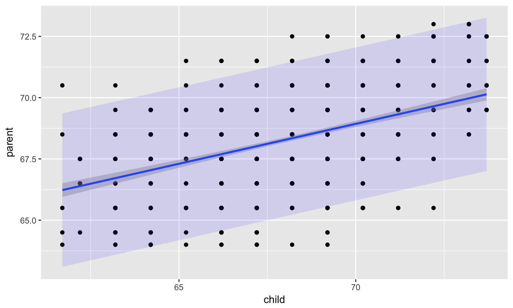
x.2 <- rnorm(1000, 0, 1) e.2 <- rnorm(1000, 0, 2) y.2 <- .5 + .55 * x.2 + e.2 d.2 <- data.frame(x.2,y.2) m.2 <- lm(y.2 ~ x.2, data = d.2)
summary(m.2)
## ## Call: ## lm(formula = y.2 ~ x.2, data = d.2) ## ## Residuals: ## Min 1Q Median 3Q Max ## -6.1107 -1.2806 0.0186 1.3581 5.7829 ## ## Coefficients: ## Estimate Std. Error t value Pr(>|t|) ## (Intercept) 0.47495 0.06294 7.547 1.01e-13 *** ## x.2 0.64871 0.06418 10.107 < 2e-16 *** ## --- ## Signif. codes: 0 '***' 0.001 '**' 0.01 '*' 0.05 '.' 0.1 ' ' 1 ## ## Residual standard error: 1.99 on 998 degrees of freedom ## Multiple R-squared: 0.09285, Adjusted R-squared: 0.09194 ## F-statistic: 102.2 on 1 and 998 DF, p-value: < 2.2e-16
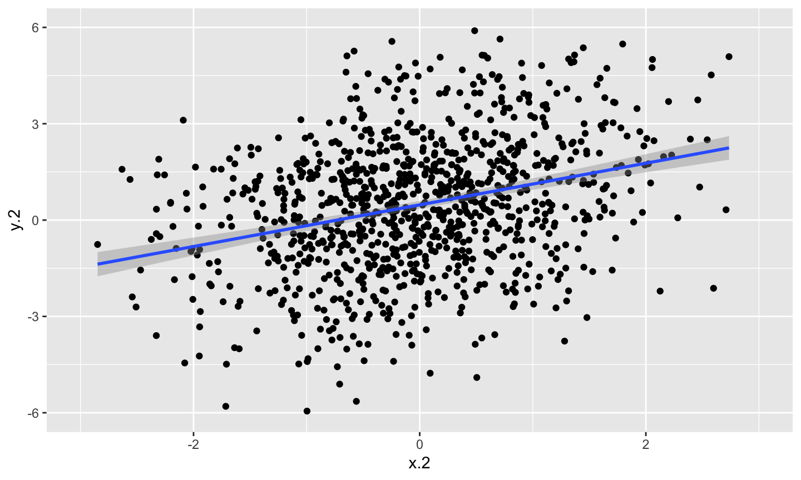
\[ Y_{i} \sim \mathcal{N}(\mu,\,\sigma)\ \] in english: Our DV for individual i is distributed normally with a mean of mu and a standard deviation of sigma
- this describes how we think our DVs are generated, and the paramters of interest
- a standard regression model assumes this, but we will see other DGPs such as binomial or poisson that do not
- a different DGP will define what “type” of regression to use
- for normal, \(\mu\) gets all the focus but \(\sigma\) is just as important
\[ H_{0}: \rho_{XY}^2= 0 \] \[ H_{1}: \rho_{XY}^2 \neq 0 \]
\[ F = \frac{MS_{regression}}{MS_{residial}} \]
Last semester you looked at different models to see how their F and SSs changed depending on what predictors were included. We can do the same thing with regression models!
The basic idea is asking how much variance remains unexplained in our model. This “left over” variance can be contrasted with an alternative model/hypothesis. We can ask does adding a new predictor variable help explain more variance or should we stick wtih a parsimonious model.
Every model test you do implicitly implies you favoring that over an alternative model, typically the null. This framework allows you to be more flexible and explicit.
fit.1 <- lm(parent ~ child, data = galton.data) fit.0 <- lm(parent ~ 1, data = galton)
summary(fit.0)
## ## Call: ## lm(formula = parent ~ 1, data = galton) ## ## Residuals: ## Min 1Q Median 3Q Max ## -4.3082 -0.8082 0.1918 1.1918 4.6918 ## ## Coefficients: ## Estimate Std. Error t value Pr(>|t|) ## (Intercept) 68.30819 0.05867 1164 <2e-16 *** ## --- ## Signif. codes: 0 '***' 0.001 '**' 0.01 '*' 0.05 '.' 0.1 ' ' 1 ## ## Residual standard error: 1.787 on 927 degrees of freedom
summary(fit.1)
## ## Call: ## lm(formula = parent ~ child, data = galton.data) ## ## Residuals: ## Min 1Q Median 3Q Max ## -4.6702 -1.1702 -0.1471 1.1324 4.2722 ## ## Coefficients: ## Estimate Std. Error t value Pr(>|t|) ## (Intercept) 46.13535 1.41225 32.67 <2e-16 *** ## child 0.32565 0.02073 15.71 <2e-16 *** ## --- ## Signif. codes: 0 '***' 0.001 '**' 0.01 '*' 0.05 '.' 0.1 ' ' 1 ## ## Residual standard error: 1.589 on 926 degrees of freedom ## Multiple R-squared: 0.2105, Adjusted R-squared: 0.2096 ## F-statistic: 246.8 on 1 and 926 DF, p-value: < 2.2e-16
anova(fit.0)
## Analysis of Variance Table ## ## Response: parent ## Df Sum Sq Mean Sq F value Pr(>F) ## Residuals 927 2961.4 3.1946
anova(fit.1)
## Analysis of Variance Table ## ## Response: parent ## Df Sum Sq Mean Sq F value Pr(>F) ## child 1 623.26 623.26 246.84 < 2.2e-16 *** ## Residuals 926 2338.10 2.52 ## --- ## Signif. codes: 0 '***' 0.001 '**' 0.01 '*' 0.05 '.' 0.1 ' ' 1
anova(fit.1, fit.0)
## Analysis of Variance Table ## ## Model 1: parent ~ child ## Model 2: parent ~ 1 ## Res.Df RSS Df Sum of Sq F Pr(>F) ## 1 926 2338.1 ## 2 927 2961.4 -1 -623.26 246.84 < 2.2e-16 *** ## --- ## Signif. codes: 0 '***' 0.001 '**' 0.01 '*' 0.05 '.' 0.1 ' ' 1
\[ H_{0}: \beta_{1}= 0 \] \[ H_{1}: \beta_{1} \neq 0 \]
\[ se_{b} = \frac{s_{Y}}{s_{X}}{\sqrt{\frac {1-r_{xy}^2}{n-2}}} \] \[ t(n-2) = \frac{b_{1}}{se_{b}} \] ** what is standardized equation?
## Warning: Removed 19 rows containing non-finite values (stat_smooth).
## Warning: Removed 19 rows containing missing values (geom_point).
## Warning: Removed 1 rows containing non-finite values (stat_smooth).
## Warning: Removed 1 rows containing missing values (geom_point).
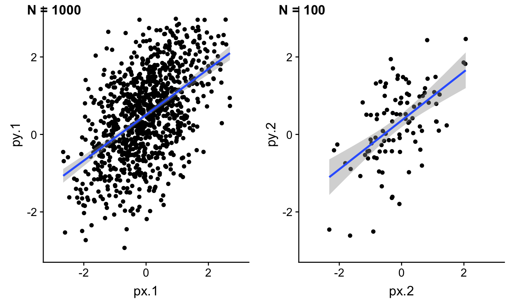
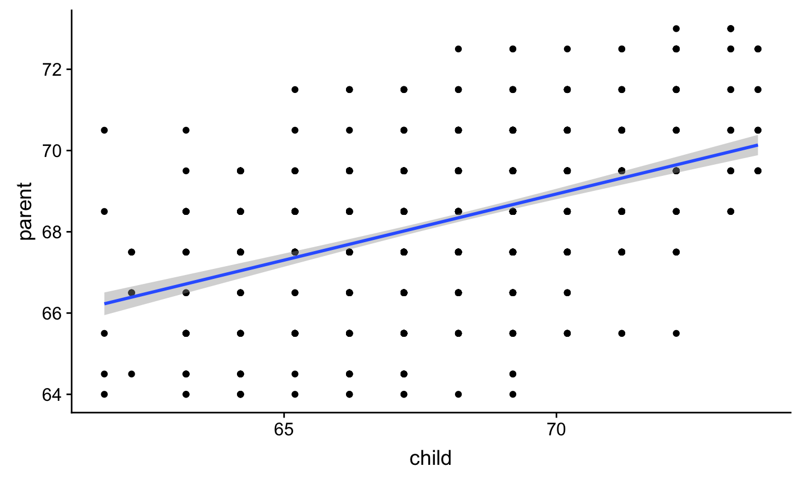
\[ \hat{Y}\pm t_{critical} * se_{residual}*\sqrt{\frac {1}{n}+\frac{(X-\bar{X})^2}{(n-1)s_{X}^2}} \]
\[ \hat{Y}\pm t_{critical} * se_{residual}*\sqrt{1+ \frac {1}{n}+\frac{(X-\bar{X})^2}{(n-1)s_{X}^2}} \]
temp_var <- predict(fit.1, interval="prediction")
new_df <- cbind(galton.data, temp_var)
pred <- ggplot(new_df, aes(x=child, y=parent))+
geom_point() +
geom_smooth(method=lm,se=TRUE) +
geom_ribbon(aes(ymin = lwr, ymax = upr),
fill = "blue", alpha = 0.1)
pred
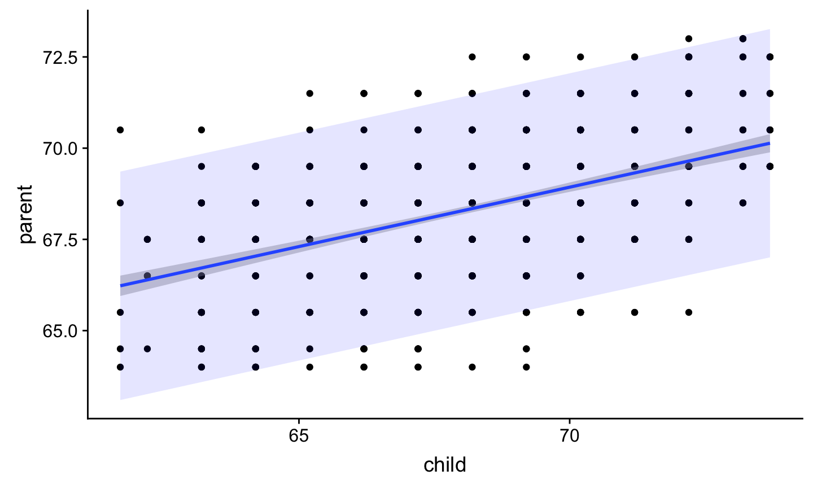